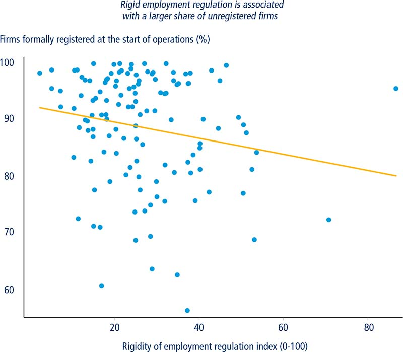
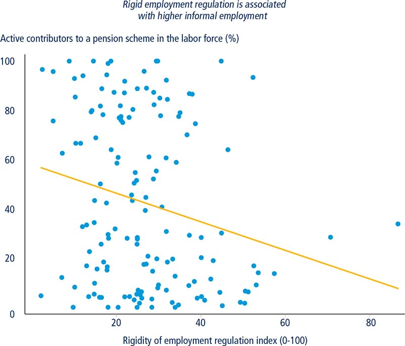
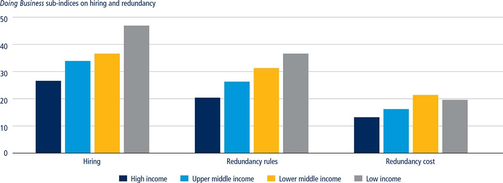
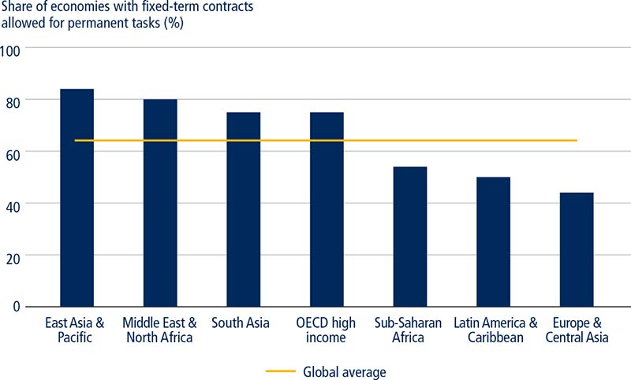
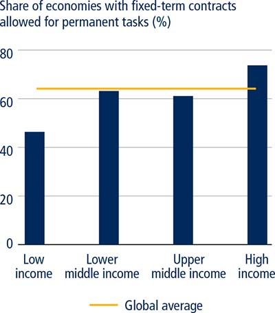
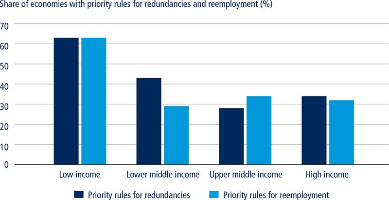
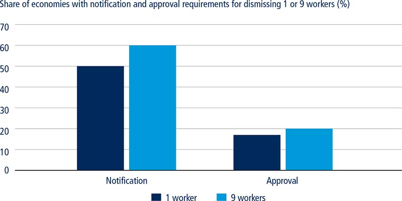
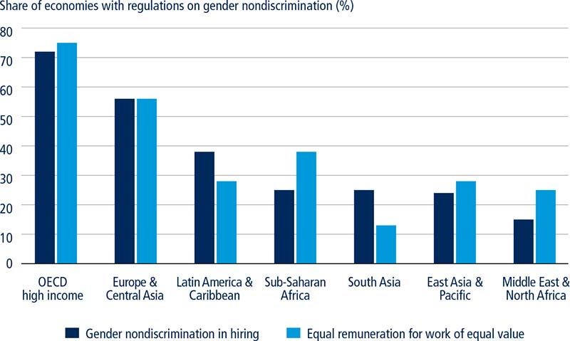
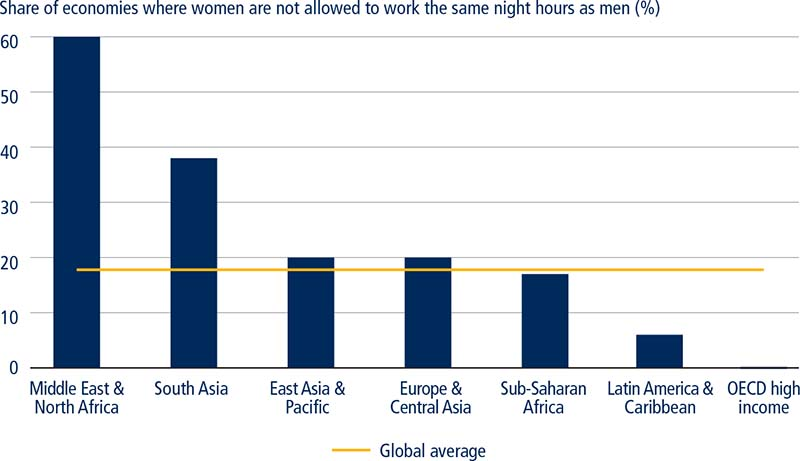

Labor market regulation can protect workers’ rights, reduce the risk of job loss and support equity and social cohesion. However, overregulation of the labor market can discourage job creation and constrain the movement of workers from low to high productivity jobs. Stringent labor regulation has also been associated with labor market segmentation and reduced employment of women and youth. Laws that restrict women’s access to certain jobs, for example in mining or manufacturing, often with the goal of protecting women’s interests, may contribute to occupational segregation and a larger gender wage gap.1 By contrast, weak labor market rules can exacerbate problems of unequal power and inadequate risk management.2 The challenge in developing labor policies is to avoid the extremes of over and under-regulation by reaching a balance between worker protection and flexibility.3
▪ Regulation is essential for the efficient functioning of labor markets and worker protection. Labor market rules can also potentially have an impact on economic outcomes. Doing Business data show that rigid employment regulation is associated with higher levels of informality. By contrast, weak labor market rules can result in discrimination and poor treatment of workers.
▪ The challenge for governments in developing labor policies is to strike the right balance between worker protection and flexibility.
▪ Regulation of labor markets differs significantly by income group. Low- and lower-middle-income economies tend to have stricter employment protection regulation than more developed economies.
▪ One reason for more rigid employment protection legislation in low- and lower-middle-income economies is the lack of unemployment insurance. None of the low-income economies and only 23% of lower-middle-income economies have unemployment protection stipulated in the law.
▪ Most economies do not have laws mandating gender nondiscrimination in hiring and equal remuneration for work of equal value. Such laws are most common in OECD high-income economies.
▪ There is no blueprint for the optimal mix of employment protection rules. Regulation should be tailored to national circumstances and designed in collaboration with social partners.
Doing Business measures several aspects of labor market regulation—hiring, working hours, redundancy rules and cost—as well as a number of job quality aspects (such as the availability of unemployment protection, maternity leave and gender nondiscrimination at the workplace) for 190 economies worldwide. This helps benchmark an economy’s labor rules and examine the relationship between labor market regulation and economic outcomes. For example, economies with more flexible labor regulation tend to have a higher share of formally registered firms. Furthermore, flexible employment regulation is associated with a larger share of active contributors to a pension scheme in the labor force—a measure that can be used as a proxy for formal employment (figure 10.1).
FIGURE 10.1 Stringent labor regulation is associated with higher informality

Sources: Doing Business database; World Bank Enterprise Surveys database (http://www.enterprisesurveys.org).
Note: The rigidity of employment regulation index is the average of four sub-indices: hiring, working hours, redundancy rules and cost. The relationship is significant at the 5% level after controlling for GDP per capita.

Sources: Doing Business database; ILO 2014.
Note: The rigidity of employment regulation index is the average of four sub-indices: hiring, working hours, redundancy rules and cost. The relationship is significant at the 10% level after controlling for GDP per capita.
Employment protection legislation (EPL)—the rules governing hiring and dismissal of workers—is designed to enhance worker welfare and prevent discrimination. However, its impact on labor market outcomes is a contentious subject. Proponents of strict EPL argue that it provides stability by moderating employment fluctuations over the business cycle and increases worker effort and firm investments in human capital. Critics have linked stringent employment protection legislation to the proliferation of dual labor markets, whereby a labor force becomes segmented into formal versus informal sector workers (in developing economies) and permanent versus contingent workers (in high-income economies). Several studies point to the association between strict labor market regulation and higher levels of informality,4 which negatively impacts productivity and welfare. On average, firms in the informal sector have less value added per worker and pay lower salaries than formal sector enterprises. Informal firms also offer little job security and few fringe benefits to their employees. Rigid labor rules have also been linked to the decreased ability of vulnerable groups—women, youth and the low skilled—to find jobs.5 Some studies have found that strict employment regulation reduces aggregate job flows and hinders productivity.6 The overall impact of strict EPL on productivity is unclear, however, as firms may choose to invest in capital and skills deepening in response to stricter legislation.7
Balancing employment protection legislation to ensure adequate worker protection as well as efficient labor allocation is an important priority for governments as they strive to create more and better jobs. Measuring labor market regulation is a key step in formulating informed public policy. This year Doing Business, which has measured aspects of labor market regulation since 2003, includes information on about 40 aspects of labor laws in 190 economies.
Doing Business data show that low- and lower-middle-income economies tend to have more rigid employment protection legislation compared to more developed economies (figure 10.2). The narrative below discusses differences in selected labor market regulations, such as availability of fixed-term contracts, redundancy rules, severance pay and unemployment insurance across different groups of economies.8
FIGURE 10.2 Low-income economies tend to have more rigid employment protection legislation

Source: Doing Business database.
Note: Higher scores indicate more rigid regulation.
As economies develop, several types of contracts may be required to satisfy business needs. Doing Business measures the availability of fixed-term contracts9 for a task relating to a permanent activity of the firm. Fixed-term contracts allow firms to better respond to seasonal fluctuations in demand, temporarily replace workers on maternity leave and reduce the risks associated with starting an innovative activity with uncertain returns on investment. Fixed-term contracts also have the potential to increase the employability of first time labor market entrants, particularly the youth, by providing them with experience and access to professional networks, which may eventually enable them to find permanent jobs.10 Evidence from the Organisation for Economic Co-operation and Development (OECD) shows that fixed-term contracts are more common among the youth than older workers, suggesting that many young people manage to transition to permanent jobs after an initial fixed-term contract.11 For example, in the EU-1012 only 50% of young workers hold a permanent contract one year after leaving school but 73% are in permanent employment five years after completing their education.13 These numbers are higher in the Republic of Korea and the United Kingdom where 86% and 81% of young workers, respectively, are in permanent employment one year after leaving school and more than 90% five years after graduation.14
Fixed-term contracts are currently available in 64% of economies but there is a significant regional variation: 84% of economies in East Asia and the Pacific compared to 44% in Europe and Central Asia allow the use of fixed-term contracts for permanent tasks (figure 10.3). Low-income economies are less likely to allow fixed-term contracts than middle-income and high-income economies (figure 10.4).
FIGURE 10.3 The use of fixed-term contracts varies widely by region

Source: Doing Business database.
FIGURE 10.4 Low-income economies are most likely to limit the use of fixed-term contracts

Source: Doing Business database.
The impact of the use of fixed-term contracts on labor market outcomes depends on the rigidity of employment protection legislation for regular workers. Evidence from the OECD shows that in economies with significant differences in regulation governing permanent and fixed-term contracts, firms tend to exploit the latter arrangement.15 Substantial variations in employment protection legislation for different types of contracts incentivizes companies to substitute fixed-term for permanent workers with no overall increase in employment.16 It also reduces the conversion rate of temporary to permanent employment, turning fixed-term contracts into a trap rather than a stepping stone toward an open-ended job.17 Indeed, in almost all EU economies on which data are available, less than 50% of the workers that were hired on a temporary contract in a given year are employed on a permanent contract three years later.18 Furthermore, if dismissing permanent employees is costly, workers on fixed-term contracts will bear a disproportionate burden of labor market adjustments.19 Evidence from the OECD also shows that firms are less likely to invest in training for temporary workers compared to permanent workers (by 14%, on average, for economies on which data are available) with negative implications for professional development and earnings as well as overall firm productivity.20 The resulting duality of labor markets can have a number of negative outcomes (box 10.1).
BOX 10.1 Flexibility at the margin: The perils of the dual labor market in Spain
Spain has the highest level of labor market segmentation in the EU-15,a with around a quarter of its population and almost 90% of new hires employed on fixed-term contracts.b The conversion rate from fixed-term to permanent employment hovers around 6%.c Nearly all fixed-term employees in Spain (96%) accepted contracts of limited duration because they could not find a permanent job.d
The origin of Spain’s labor market duality dates back to a 1984 reform. The Spanish economy was hit hard by the second oil crisis and the unemployment rate surged. To boost employment, the government removed most restrictions on the use of fixed-term contracts while the dismissal rules for regular contracts remained unchanged. After the reform, fixed-term contracts could be used for any economic activity for up to three years. These contracts entailed a relatively low dismissal cost (with severance pay of up to 12 days per year of service) and their termination could not be appealed in labor courts.e For permanent contracts, dismissal costs depended on the reason for the layoff and the seniority of the employee: fair dismissals required mandatory severance pay of 20 days of salary per year of service with a maximum of 12 monthly wages; unfair dismissals mandated payment of 45 days of salary per year of service with a maximum of 42 monthly wages.f Economic reasons for fair dismissals included in the law were limited and the courts had a very narrow reading of those reasons. Given the large difference in dismissal costs, it is not surprising that soon after the reform almost all new hires were made on fixed-term contracts.
Although reforms have been introduced since 1994 to encourage permanent employment, these have had little impact on the prevalence of fixed-term contracts. Around 35% of employees in Spain were on a fixed-term contract in 2006. This figure declined to 24.5% in 2011/12 following the global economic crisis as temporary workers were the first to be dismissed.g
The dual labor market has resulted in a number of negative equity and efficiency outcomes. Fixed-term workers in Spain experience frequent job turnover and face a higher risk of unemployment. The probability of being unemployed one year after being in fixed-term employment in Spain is 6.2 percentage points higher for men and 7.3 percentage points for women compared to permanent employees.h Furthermore, firms are much less likely to invest in training for temporary workers in economies with dual labor markets compared to those where transitions from fixed-term to permanent employment are easier.i In Spain, the probability of receiving employer sponsored on-the-job training is 18% lower for fixed-term workers relative to permanent employees.j This contributes to skill gaps between employees on different types of contracts and makes the transition to regular employment more difficult for fixed-term workers. Furthermore, a wide gap in the dismissal costs for fixed-term and permanent contracts—and consequently, low conversion rates—have been linked to poor total factor productivity growth in Spain.k
The government of Spain introduced several reforms between 2012 and 2015 to increase flexibility, reduce labor market duality and improve employment outcomes of young people. Measures included: (i) increasing flexibility in wage bargaining and work scheduling by prioritizing firm level agreements over those at the sectoral or regional level (to allow for labor market adjustments through wages and hours worked rather than dismissals); (ii) eliminating administrative authorization for collective dismissals while maintaining the requirement of negotiation with the unions before giving the worker notice of dismissal; (iii) reducing severance payments for unfair dismissals (compensation for fair and unfair dismissals in Spain remains larger than the average in OECD countries even after the reform); (iv) creating tax incentives for new permanent hires; and (v) establishing active labor market programs for the youth and the long-term unemployed.l The preliminary assessments showed that these reforms were associated with increased hiring on permanent contracts and reduced separations of workers on temporary contracts.m The impacts were small, however, and it will take time and a sustained reform effort to reduce labor market duality.n
a. EU-15 consists of 15 economies that were members of the EU before the May 1, 2004, enlargement (Austria, Belgium, Denmark, Finland, France, Germany, Greece, Ireland, Italy, Luxembourg, the Netherlands, Portugal, Spain, Sweden, and the United Kingdom).
b. OECD 2014b.
c. Cabrales, Dolado and Mora 2014.
d. OECD 2014b.
e. Bentolila, Dolado and Jimeno 2011.
f. Bentolila, Dolado and Jimeno 2011.
g. OECD 2014b.
h. OECD 2014b.
i. Cabrales, Dolado and Mora 2014.
j. OECD 2014b.
k. Dolado, Ortigueira and Stucchi 2012.
l. IMF 2015b; OECD 2014c.
m. IMF 2015b; OECD 2014c.
n. IMF 2015b; OECD 2014c
Modification of the size and composition of the workforce is essential to ensure that firms can respond to changing economic conditions and technological developments. However, job destruction negatively impacts dismissed workers through income loss and skill deterioration if the search for a new job is protracted. Large-scale dismissals can also have high social costs. The challenge for governments is to avoid overregulation of redundancy rules, which constrains labor reallocation to more productive activities and, at the same time, to protect workers against discrimination and minimize the costs of job loss through effective unemployment insurance, and active labor market and social assistance programs.
Doing Business data on redundancy rules show that while the majority of economies have relatively flexible legislation, pockets of rigidity remain for certain types of regulation. Redundancy is allowed as a ground for dismissal in all but three economies, namely Bolivia, República Bolivariana de Venezuela and Oman. However, a number of economies limit the firms’ freedom to decide which workers they want to employ and which to dismiss. In particular, 40% of economies have priority rules for redundancies (such as the requirement that the person hired most recently be dismissed first) and 37% for reemployment (the provision that new jobs first be offered to the previously dismissed workers). Low-income economies are more likely to have such rules than middle-income and high-income economies (figure 10.5). Priority rules for dismissals and reemployment benefit the incumbents disproportionately at the expense of young and potentially more productive workers. Given the rising share of youth in the working population and the high rates of youth unemployment in low-income economies, measures that limit the ability of new labor market entrants to find jobs can be particularly damaging.
FIGURE 10.5 Priority rules for redundancies and reemployment are more common in low-income economies

Source: Doing Business database.
Many economies require notification of a third-party (for example, the government employment office) for redundancy dismissals. These requirements are more common for collective dismissals involving a group of at least nine redundant workers. By contrast, third-party approval requirements for redundancy dismissals are less common (figure 10.6). The legislation tends to be more rigid in low-income economies—30% of low-income economies require third-party approval for collective dismissals while only 7% of high-income economies do so. In economies with well-functioning employment services, notification requirements for collective dismissals can help government officials prepare for an increase in the number of unemployed, including through the design of targeted job search assistance and training programs. By contrast, there is little justification for mandating third-party approval for redundancy dismissals. In some economies, obtaining such approval entails a lengthy process or the approval is hardly ever granted, making dismissals de facto impossible. This is the case in India, where cumbersome redundancy rules—combined with rigidities in other labor regulations—have been linked to a number of economic distortions (box 10.2).
FIGURE 10.6 Notification and approval requirements are more common for collective dismissals

Source: Doing Business database.
BOX 10.2 India’s labor regulation has been associated with a number of economic distortions*
Labor market issues in India are regulated by 45 central government laws and more than 100 state statutes. One of the most controversial laws, the Industrial Dispute Resolution Act (IDA) of 1947, requires factories with more than 100 employees to receive government approval to dismiss workers and close down. Obtaining such approvals entails a lengthy and difficult process and illegal worker dismissals can result in significant fines and a prison sentence. Industrial establishments also have to observe many other laws that regulate every aspect of their operations from the frequency of wall painting to working hours and employee benefits. Compliance with labor regulation also entails a considerable amount of paperwork and filing requirements.
Indian states have the freedom to amend labor laws. Besley and Burgessa found that states with rigid employment regulation had lower output, employment and productivity in formal manufacturing than they would have had if their regulations were more flexible. Sharmab applied Besley and Burgess’ methodology to assess the impact of delicensing reform on informality. The paper finds that following this reform, the informal sector contracted to a greater extent in states with more flexible labor laws; these states also experienced a larger increase in value added per worker compared to states with more rigid regulation. The author concludes that entry deregulation can lead to productivity-enhancing labor reallocation from the informal to the formal sector, if labor laws are flexible. Ahsan and Pagesc modified the Besley and Burgess methodology and evaluated the effects of employment protection legislation and the cost of labor disputes on economic outcomes. They found that in states that raised the rigidity of labor regulations above the IDA requirements, employment, output and value added per worker in registered manufacturing decreased compared to states that did not introduce such amendments. Hasan and Jandocd studied the impact of labor regulation on firm size and found that there is a much greater prevalence of larger firms in labor-intensive industries in states with more flexible labor regulation.
Although Indian labor laws aim to increase employment security and worker welfare, they often have negative impacts by creating incentives to use less labor and encouraging informality and small firm size. Indeed, Indian firms are more capital-intensive relative to the economy’s factor endowments. High labor costs in formal manufacturing have also contributed to India’s specialization in the production and export of capital-intensive and knowledge-intensive goods despite the country’s comparative advantage in low-skilled, labor-intensive manufacturing. To circumvent labor laws and other regulations, most Indian firms do not register and about 85% of non-agricultural employment is in the informal sector.e Informality is associated with low productivity: value added per worker in India’s manufacturing sector averages about one-eighth of the formal sector.f Furthermore, only 9.8 million workers out of a total estimated workforce of 470 million were employed in private sector firms with 10 or more workers in 2007-2008.g This pattern of employment distribution has important welfare implications as small enterprises in India and globally are on average less productive and pay lower wages.h
The Indian government recently announced plans for major reforms to labor regulation aimed at increasing job creation and encouraging compliance. The planned legislative amendments include the consolidation of central labor laws, facilitating the retrenchment and closing down of factories by allowing firms employing less than 300 workers to dismiss them without seeking government approval, and increasing compensation to retrenched workers. Broad consultation with a wide range of stakeholders is essential to inform the design and ensure support for reform implementation. Evaluating the impact of the reform will be important.
a. Besley and Burgess 2004.
b. Sharma 2009.
c. Ahsan and Pagés 2009.
d. Hasan and Jandoc 2012.
e. World Development Indicators database (http://worldbank.org/indicator), World Bank.
f. World Bank 2010.
g. Bhagwati and Panagariya 2013.
h. Hasan and Jandoc 2012.
* Many of the findings presented in this box were also discussed in the World Bank’s “World Development Report 2014: Risk and Opportunity.”
Most economies (79%) mandate severance payments for redundancy dismissals. This requirement can be justified by the need to provide some income protection for redundant workers. However, severance payments are a weak mechanism for income loss mitigation and are no substitute for unemployment insurance.21 On the income protection front, there is no connection between the benefits and workers’ financial situation—the same amount is paid regardless of the duration of unemployment. Despite legal entitlement, many workers fail to obtain their benefits as liabilities often arise when the firm is least capable of paying them.22 Severance pay may also contribute to labor market duality as the increase in dismissal costs can reduce access to jobs for vulnerable groups.23 Furthermore, given that severance payments tend to increase with tenure, redundancy decisions may be biased against young workers.24
Severance payments may be damaging for domestic small and medium-size enterprises struggling with economic difficulties or going out of business. In some economies, severance payments approximate or exceed one year of salary. Table 10.1 provides a snapshot of the economies with the highest legally-mandated severance pay for workers with 10 years of tenure. Overall, the magnitude of severance payments tends to decrease as the income levels of economies increase. Doing Business data show that severance payments for workers with 10 years of tenure are significantly higher in low- and lower-middle-income economies compared to high-income economies (table 10.2). However, in developing economies the capacity to enforce the law is poor,25 leaving the majority of workers outside the public sector unprotected against job loss risks.
TABLE 10.1 Top 10 economies with the highest severance pay
Economy |
Severance pay (in weeks of salary) for a worker with 10 years of tenure |
Sierra Leone |
132.0 |
Sri Lanka |
97.5 |
Indonesia |
95.3 |
Ghana |
86.7 |
Zambia |
86.7 |
Mozambique |
65.0 |
Equatorial Guinea |
64.3 |
Ecuador |
54.2 |
Egypt, Arab Rep. |
54.2 |
Lao PDR |
52.0 |
Source: Doing Business database.
Lack of unemployment insurance (and social assistance programs more generally) is one reason behind the sizeable severance pay in low- and lower-middle-income economies (table 10.2). Globally, 60% of economies do not have any unemployment benefit schemes stipulated by law; the situation is particularly dire in low-income economies. Unemployment insurance is a more effective mechanism for income protection than severance pay because it pools risk, allowing resources to be accumulated in good times and released in times of hardship. However, the introduction of unemployment insurance in economies with large informal sectors is challenging as many workers have both formal and informal jobs, which makes it difficult to establish their eligibility for unemployment insurance.26 Furthermore, open unemployment is not common in low-income economies, where the majority of the population is engaged in agriculture or self-employment. In this context, income loss is more common than job loss, making social assistance programs critically important.27 However, only one quarter of the poorest quintile are covered by some type of social assistance programs in low- and lower-middle-income economies compared to 64% in upper-middle-income economies.28
TABLE 10.2 Availability of unemployment protection and magnitude of severance pay
Income group |
Availability of unemployment protection (% of economies) |
Severance pay for a worker with 10 years of tenure (in weeks of salary) |
Low income |
0 |
24 |
Lower middle income |
23 |
28 |
Upper middle income |
44 |
20 |
High income |
81 |
13 |
Global average |
40 |
21 |
Source: Doing Business database.
In developing economies that have introduced unemployment insurance, such programs are often characterized by low coverage (due to large informal sectors and strict eligibility criteria) as well as low benefits.29 Similarly, the outreach and quality of active labor market programs like job search assistance, training, and public work programs in the developing economies is inadequate.30 Evidence from evaluations shows that, when well designed, active labor market programs in developing economies can be cost effective and have a positive impact on employment outcomes.31 Job search assistance and training programs can help workers find jobs and improve earnings provided that job openings exist. Such programs can also be effective in reaching vulnerable groups. For example, in Latin American economies and economies in transition, youth and women record significantly better outcomes from training than do middle-aged men.32 There is also evidence from a number of developing economies that public employment programs can be used effectively to provide workers with temporary jobs and a source of income.33
Gender equality can make institutions more representative, improve social cohesion and increase productivity. Women constitute approximately 40% of the global labor force and over 50% of university students.34 Removing regulatory barriers to women’s access to the labor market can generate broad productivity gains and improve socioeconomic outcomes.
Doing Business data show that approximately 60% of economies do not have laws mandating gender nondiscrimination in hiring and equal remuneration for work of equal value (figure 10.7). Such laws are more common in OECD high-income economies, followed by economies in Europe and Central Asia. Women’s earnings globally are estimated to be on average 77% of men’s earnings35 and the magnitude of the wage gap varies significantly by economy, sector and occupation. The establishment of nondiscrimination laws can provide a legal framework for action on women’s rights and is an important step toward reducing gender inequality in the labor market.
FIGURE 10.7 Laws on gender nondiscrimination in hiring and equal remuneration for work of equal value are most common in OECD high-income economies

Source: Doing Business database.
Some economies regulate the types of jobs women can take through restrictions on working at night or in certain industries and occupations. Restrictions on working hours for nonpregnant and nonnursing women are present in 18% of economies and are most common in the Middle East and North Africa (figure 10.8). Legal barriers to women’s work in certain industries and occupations are much more common—100 out of 173 economies for which data are available prohibit women’s participation in certain economic activities.36 For example, in the Kyrgyz Republic women cannot enter approximately 400 professions37 and in the Russian Federation women are barred from 456 specified jobs.38 Such legislation is often meant to protect women’s interests but has been associated with occupational segregation and larger wage gaps as many of these jobs are in well-paid sectors such as mining and manufacturing.39 Furthermore, economies with work hour or industry restrictions also have, on average, lower female labor force participation—45%, compared with 60% in economies with no restrictions.40
FIGURE 10.8 Restrictions on women’s night work are most common in the Middle East and North Africa

Source: Doing Business database.
Women, Business and the Law provides quantitative measures of regulations that affect women’s economic opportunities and offers useful insights on the impact of legal gender disparities on women’s economic outcomes. The analysis shows that lower legal gender equality is associated with a larger gender gap in secondary school attendance as families may decide that it is not worthwhile to invest in girls’ education in economies where women face legal barriers to labor market access. Furthermore, in economies with larger legal gender disparities, a woman is less likely than a man to be employed, run a business or advance to management positions. Economies with lower legal gender equality also tend to have a larger wage gap compared to economies where laws are more gender equal.
Low- and middle-income economies tend to have stricter hiring and redundancy rules. This tendency may be partially explained by the lack of effective mechanisms to protect the income of workers in case of job loss. However, strict EPL may not be an optimal mechanism to support workers and improve the functioning of labor markets. Rules on severance pay, for example, may be difficult to enforce when firms are struggling with economic difficulties or going out of business. Despite stringent employment protection legislation, workers in low-income economies are vulnerable to arbitrary treatment by employers and job loss risks due to weak law enforcement and large informal sectors.
Labor policies aimed at protecting workers rather than jobs may carry bigger promise. Strengthening social protection systems—through the development of unemployment insurance, active labor market programs and social safety nets—is instrumental to support workers that have lost their jobs or experienced a decline in earnings.41 Expanding coverage of social assistance programs to the informal sector is important for economies where the informal sector is large. One way to do it is through the establishment of integrated cash transfer programs, which could be linked to requirements to participate in training or public work programs, and provide income support while improving worker employability. It is also important to strengthen labor inspectorates, both to enforce worker rights and to provide advisory services to enterprises to improve their compliance with core labor standards.
Preserving jobs that are no longer economically viable—whether due to technological change or domestic or international competitive pressures—may result in an inefficient allocation of resources and hinder productivity. There is no blueprint for the optimal mix of employment protection rules and such regulation should be tailored to national circumstances and designed or reformed in collaboration with social partners. Care should be taken to avoid policies that discourage job creation and increase the level of informality in the economy.
Governments around the world can do more to improve access to economic opportunities for women. Establishment and enforcement of legislation that levels the playing field in access to jobs and remuneration for men and women can strengthen women’s economic status and reduce gender inequality in the labor market. Instead of creating impediments for women’s access to certain jobs, governments can work with employers’ organizations and social partners to promote health and safety standards for men and women. This approach can help reduce occupational injuries and support women in realization of their professional aspirations.
This case study was written by Anna Reva and Margarida Rodrigues.
1. World Bank 2015a.
2. World Bank 2012a.
3. World Bank 2012a.
4. Djankov and Ramalho 2009; Sharma 2009; Loayza, Oviedo and Serven 2005.
5. Montenegro and Pages 2003; Kahn 2010; Kugler, Jimeno and Hernanz 2005.
6. Martin and Scarpetta, 2011; Bassanini, Nunizata and Venn 2008.
7. Betcherman 2012.
8. More detailed and economy disaggregated data on these and other aspects of labor regulation are available in the annex to the report and on the Doing Business website.
9. A fixed-term contract refers to a contract with a specified end date. Fixed-term contracts can be used for permanent as well as for temporary and seasonal activities.
10. OECD 2014b.
11. OECD 2014b.
12. The EU-10 consists of Austria, Belgium, Denmark, Finland, Germany, Greece, Ireland, Italy, Portugal, and Spain.
13. OECD 2008.
14. OECD 2008.
15. OECD 2014b.
16. OECD 2013a.
17. OECD 2014b.
18. OECD 2014b.
19. OECD 2014b.
20. OECD 2014b.
21. Holzmann and Vodopivec 2012.
22. A study on Peru found that only half of all workers legally entitled to severance payments are likely to receive them. In 2000 one-third of the total severance pay obligations in Slovenia were not honored; Holzmann and Vodopivec 2012.
23. Holzmann and Vodopivec 2012.
24. Holzmann and Vodopivec 2012.
25. Holzmann and Vodopivec 2012.
26. See the discussion of possible models to adjust the classic unemployment insurance schemes to developing economy contexts in Vodopivec 2013 and Robalino, Vodopivec and Bodor 2009.
27. World Bank 2012a.
28. World Bank 2015a.
29. Kuddo, Robalino and Weber 2015.
30. Banerji and others 2014.
31. World Bank 2012a.
32. World Bank 2012a.
33. Subbarao and others 2013.
34. World Bank 2011.
35. ILO 2016.
36. World Bank 2015a.
37. Sakhonchik 2016.
38. World Bank 2015a.
39. World Bank 2015a.
40. World Bank 2011.
41. World Bank 2012a; Kuddo, Robalino and Weber 2015; Vodopivec 2013; Grosh and others 2008.